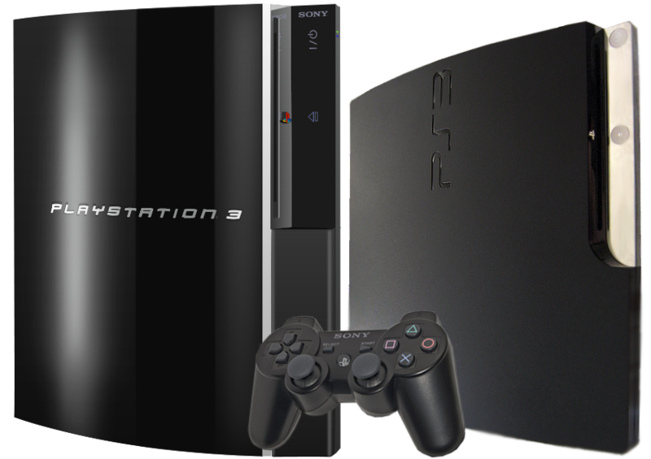
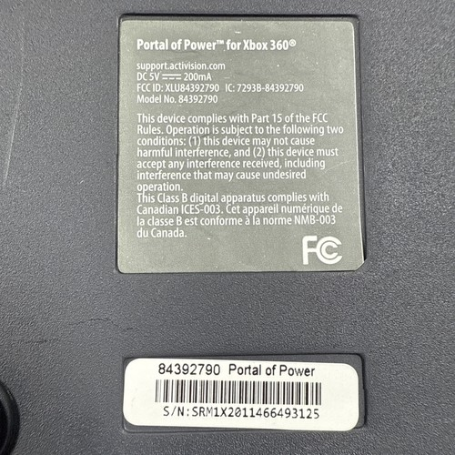
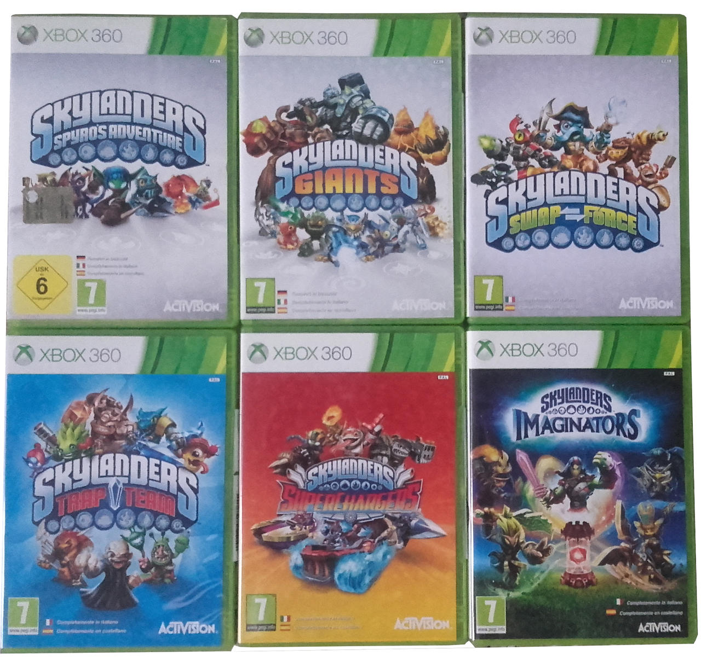
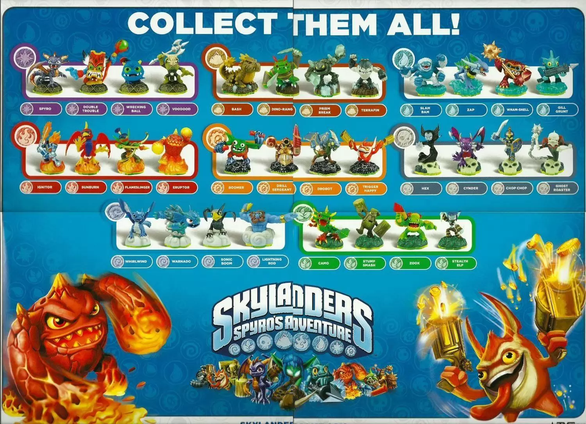

This page will go over the required systems and equipment in order to play these games starting with...
First off it's important to pick a console to play these games. As these games are now somewhat older, I would recommend the use of an older system such as the Playstation 3 or Xbox 360. Technically some of these games would come out for the next generation of consoles after these ones but I find it easier to have one machine that can play every game instead of needing to swap consoles in and out. Beyond those two recommendations, there is also the Wii U.

From a gameplay standpoint, none of these games can be played without one of these portals. It's important to inspect a serial number on your portal of choice to confirm it's made for the correct system. The portals used for Wii and PS3 are interchangable but any portals made for either the Xbox 360 or Xbox One can only be used on those respective systems. Once you have a portal, the next question would be, which game?

While many small side-games exist, this guide is only going to cover the first three mainline releases starting in release order. Skylanders: Spyro's Adventure is the first game in the series and a personal favorite. The most simple mechanically but for the type of game it is, that's not necessarily a bad thing. The second game, Skylanders: Giants, is more of the same with new figures released and a new story mode. Also mechanically simple. Skylanders: Swap Force is the third game in the series and introduced new figures that could have their tops and bottoms swapped between each other through the use of magnets with the impressive part being these swapped figures showing up the same way in game. Any of these three games I would recommend though for first time players I feel it's best to start at the very beginning. The picture below also includes the last three mainline releases which, while I would still recommend, divert heavily from the usual formula of these games.

The last step, buying toys! For the first and second game, all you really need is 1 Skylander of each element, plus a single giant of any element for the second game. If you're someone looking to maximize their value, I would highly suggest the first game as it has the cheapest figures which can be found in a plentiful amount on Ebay. Plus, with that collection, you only need to buy one more Skylander to be able to play all of Giants. Swap Force is a bit more costly as each swappable Skylander comes with a unique feature on the bottom piece required for certain optional parts of levels.
